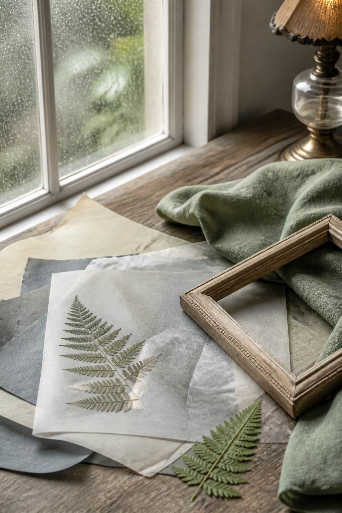
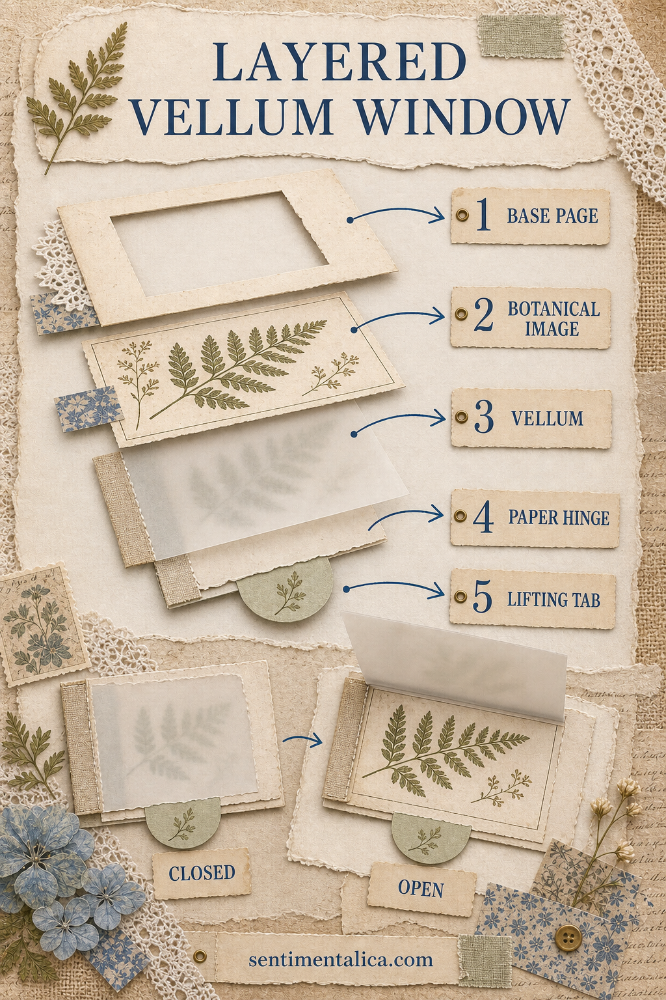
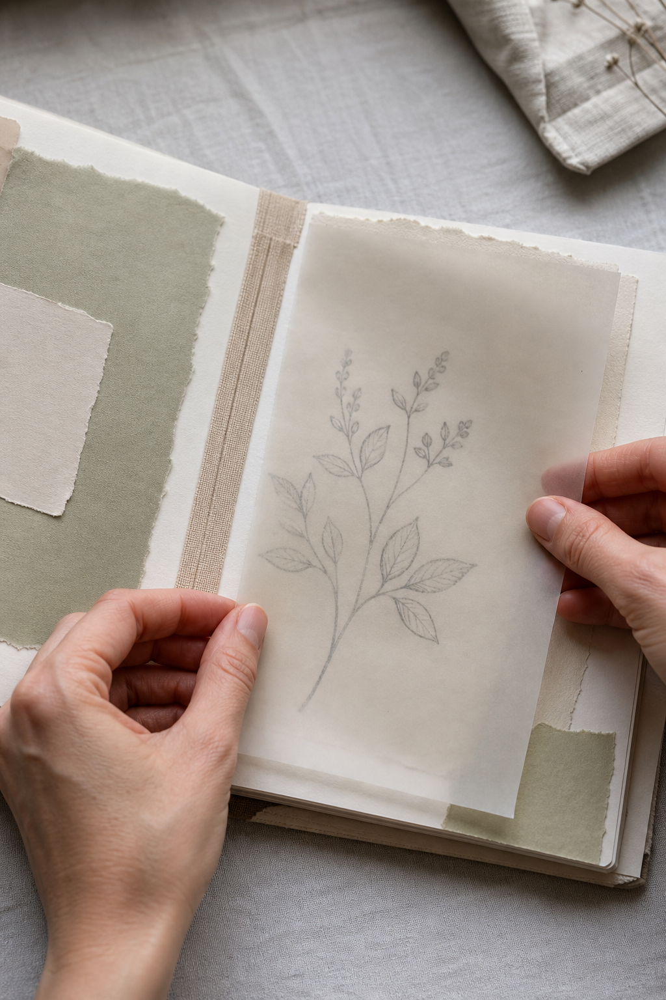

Vellum creates a pause between two journal moments. A faint image appears first, then becomes clear as the translucent layer turns. This project uses that reveal without adding a bulky frame.


Prepare the image beneath
Choose a simple drawing, photograph copy, pressed-botanical scan, or a few lines of handwriting. Strong silhouettes work better than tiny detail. Trim it smaller than the page so a calm paper border remains visible.
Cut the vellum generously
Cut vellum about half an inch larger than the image on every side. That margin gives you room for a hinge and a small lifting tab. Handle it with clean dry hands because fingerprints catch the light.
Make a linen-paper hinge
Use book cloth, paper tape, or a thin strip of strong paper. Attach half to the vellum and half to the journal page. Leave a narrow gap at the fold so the vellum can lie flat over layered paper.

Hide adhesive deliberately
Wet glue often shows through vellum. Place it only beneath a paper tab, stitched edge, or hinge strip. Double-sided tape may also show, so test a scrap first. Two small stitches can be the cleanest attachment.
Create a gentle first view
Add one faint pencil mark, tiny date, or pressed-paper shape on the vellum itself. Keep it lighter than the image below. The top layer should suggest the story rather than repeat it.
Balance the facing page
Repeat one color from the hidden image on the opposite page: a sage scrap, smoke-blue thread, or cream label. Avoid another large focal point. The window needs enough visual quiet to feel like a reveal.
Protect the fold
Close the journal slowly and check that the vellum does not touch the spine. Round the outer corners if they catch. If the sheet curls, press it between clean paper overnight rather than forcing it with more adhesive.
A successful vellum window rewards curiosity. The page changes with light, movement, and the reader’s hand, while the construction remains simple enough to use again.
Image note: Some visuals in this article were created with AI and curated by Sentimentalica.